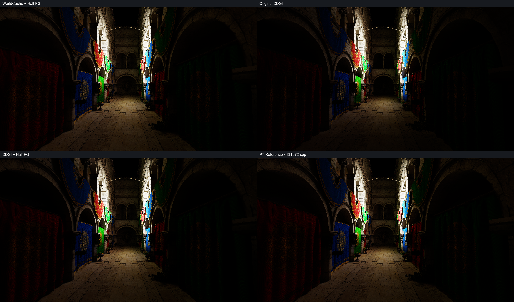
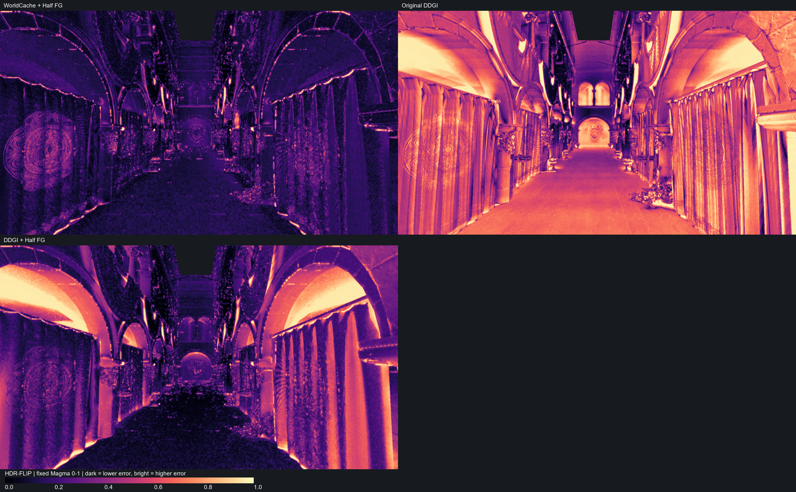
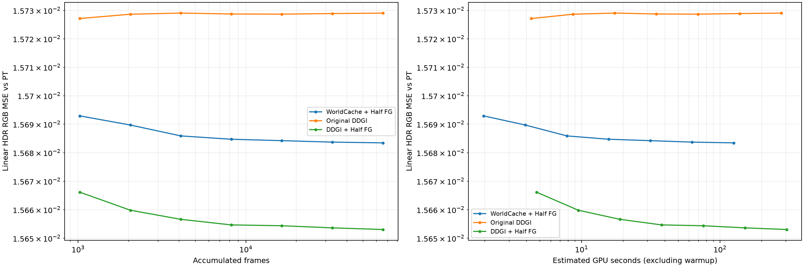
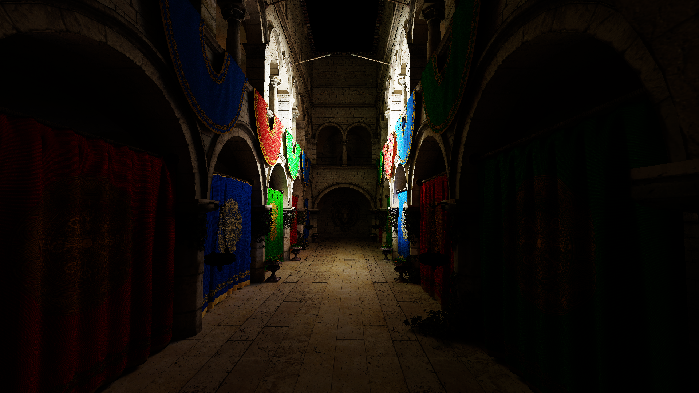
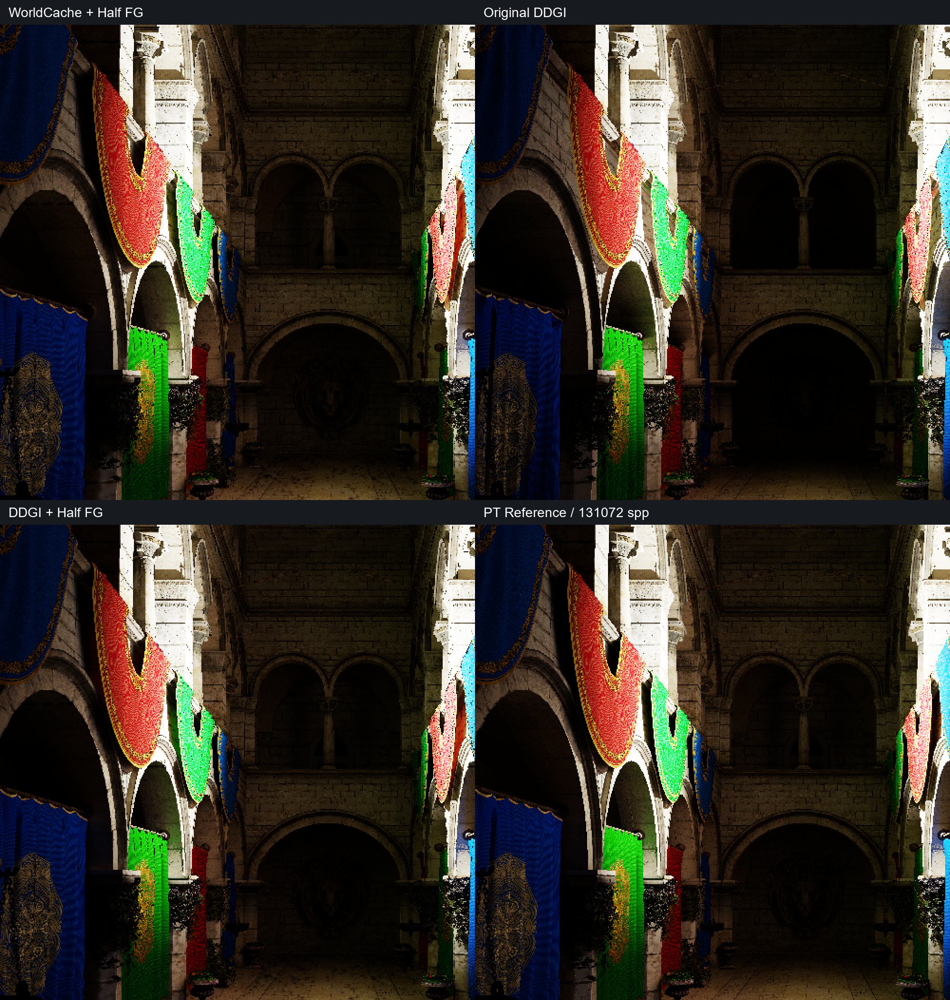

2026-11-19 · 官方探针布局更新后重测：三组 GI 重新运行、四组耗时重测；复用原有收敛 PT 参考图 · 原生 1920×1080。三种 GI 均使用 Accumulate；PT 使用未经降噪的参考累积。ReSTIR、NRD、RTXDI 全部关闭。WorldCache 为当前 Falcor 实验性适配，不是完整 UE Lumen 的性能或质量结果。
| 方案 | 线性 HDR RGB MSE ↓ | HDR-FLIP ↓ | GPU 整图 ms ↓ |
|---|---|---|---|
| WorldCache＋半分辨率 FG | 0.01568343 | 0.16373 | 1.917 |
| 原生 DDGI（像素插值 probe） | 0.01572903 | 0.57468 | 4.243 |
| DDGI＋半分辨率 FG | 0.01565306 | 0.31827 | 4.627 |
| PT Reference（131072 spp 总累积） | — | — | 161.379（8 spp/帧） |
WorldCache＋半分辨率 FG 相对 DDGI＋半分辨率 FG：MSE +0.19%，HDR-FLIP -48.56%，GPU 耗时 -58.57%。
这是当前参数下的方案对比，没有强制匹配 GPU 时间或缓存射线预算；单场景、单条 GI 随机序列不能代表算法普遍优劣。PT 的毫秒数是 8 spp 的单帧成本，不是取得整张 131072 spp Reference 的总成本。

旧版 DDGI 为自动包围盒 24×12×16；本次仅 DDGI 探针布局与偏移参数对齐官方，灯光、材质和参考图保持一致。WorldCache 重新运行，用于观察重复测量差异。
| 方案 | 旧 HDR-FLIP | 新 HDR-FLIP | 旧 GPU ms | 新 GPU ms |
|---|---|---|---|---|
| WorldCache＋半分辨率 FG | 0.16373 | 0.16373 | 1.920 | 1.917 |
| 原生 DDGI（像素插值 probe） | 0.67282 | 0.57468 | 3.541 | 4.243 |
| DDGI＋半分辨率 FG | 0.27900 | 0.31827 | 3.814 | 4.627 |
SponzaLambert 保留颜色、法线贴图和 alpha 裁剪，所有材质替换为 PBRTDiffuseMaterial（ρ/π），没有镜面项。相机 (-9,1.6,0) 看向 (8,2.5,0)，frame height 24 mm / focal length 18 mm；点光源 (0,4,0)，RGB intensity=(600,600,600)，方向光关闭。各路径使用当前项目相同的解析点光源衰减。
三种 GI 各预热 8192 帧，之后清空 Accumulate，累积 65536 帧。缓存／探针持续更新，不冻结。累积精度 SingleCompensated，静态测试关闭自动重置；截图输出在累积开始前注册。两条 FG 均为 960×540，每个 2×2 块左上像素每帧发射一根漫反射射线，jitter 关闭，再用同一套深度／法线引导重建。FG 射线预算相同，缓存更新预算不同。
DDGI：采用官方 Sponza 网格，中心 (-0.4,5.4,-0.25)，22×22×22=10648 probes，间距 (1.02,0.5,0.45)，关闭 autoBounds；每 probe 256 rays，hysteresis=0.97，世界空间 normal/view bias=0.1/0.3，relocation 最小距离=0.3，启用 relocation/classification。WorldCache：2²⁰ 表容量，cell density=20，最小 cell 宽度 0.025；每 8×8 像素随机选一条缓存更新路径，3 个更新顶点＋末端缓存查询，历史长度 16、64 帧未使用淘汰，亮度截断关闭；没有 DDGI 探针。该适配尚未实现 UE 的查询滤波、跨层历史迁移和俄罗斯轮盘。
PT：8 spp/帧，31 次最大表面／漫反射反弹，NEE+MIS，RR 关闭，不降噪。两条独立种子序列各 65536 spp，线性平均得到 131072 spp Reference。它是有限采样、有限路径长度的参考，下方给出实用收敛检查。
MSE 在共同可见表面 mask 内，对未经曝光和色调映射的 HDR RGB 计算平均平方误差；HDR-FLIP 使用 PPD=67、ACES 和同一 PT 推导的曝光范围。MSE 可能由少量高亮像素主导；按 PT 亮度排序，最亮 10% 像素的误差占比分别为：WorldCache＋半分辨率 FG 99.68%, 原生 DDGI（像素插值 probe） 98.76%, DDGI＋半分辨率 FG 99.83%。
所有 PNG 共用 -0.9548 EV（将 PT 可见表面亮度第 99 百分位映射到色调映射前的 1），再使用 ACES fitted 和 sRGB。没有单独提亮任何方案；展示曝光不影响 MSE。
统一 Magma [0,1] 色标。暗紫黑表示误差小，红橙浅黄表示误差大；不是百分比相似度，也不区分偏亮／偏暗。mask 外及拼图留白使用深灰背景。

PT 复用上一轮已通过收敛检查的 131072 spp 参考，场景、材质、灯光及 PT 源码未改变；本轮重新验证其相对于新 GI 结果的参考稳定性。三组 GI 均重新预热和累积。

右图以稳态整图 GPU 耗时×累积帧数估算预算，不含预热和截图。缓存预算不同，不能将相同帧数等同于相同总射线数。
| 方案 | 32768→65536 MSE 变化 | HDR-FLIP 变化 | 前后图像差异 MSE / 对 PT 误差 | 检查 |
|---|---|---|---|---|
| WorldCache＋半分辨率 FG | -0.002% | -0.420% | 0.001% | 通过 |
| 原生 DDGI（像素插值 probe） | +0.001% | -0.052% | 0.000% | 通过 |
| DDGI＋半分辨率 FG | -0.004% | -0.283% | 0.001% | 通过 |
GI 阈值：以上三项绝对比例均低于 1%。PT 两条独立序列差异 MSE/4=3.734955e-07，估计参考平均中的残余噪声，占最低方案误差 0.002%；噪声 RMS/参考 RGB RMS=0.095%。PT 合计 65536→131072 spp 的图像差异 MSE=3.735413e-07，自身 HDR-FLIP=0.02678。参考翻倍后，各方案 MSE 和 HDR-FLIP 相对变化最大分别为 0.004%、0.506%。
PT 检查要求：噪声及翻倍差异均低于最低方案误差 1%，相对 RGB RMS 噪声低于 0.5%，各方案指标随参考翻倍变化小于 1%。检查结果：{"gi_converged": true, "pt_noise_below_1percent_method_error": true, "pt_relative_rgb_rms_below_0_5percent": true, "pt_doubling_below_1percent_method_error": true, "pt_reference_scores_stable": true}。这些是实用稳定性检查，不证明所有像素数学上完全收敛；尤其极暗处在高曝光下仍可能存在参考噪声，不能直接从方案 HDR-FLIP 中减去参考 FLIP。
WorldCache + Half FG:
Visibility → WorldCache [CachePaths → CacheResolve → PrimaryShading → HalfGather]
→ Reconstruct → Accumulate → Display
Original DDGI:
Visibility → DDGI [ProbeUpdate → PrimaryShading / probe interpolation]
→ Accumulate → Display
DDGI + Half FG:
Visibility → DDGI [ProbeUpdate → PrimaryShading → HalfGather]
→ Reconstruct → Accumulate → Display
PT Reference:
Visibility → PT [8 spp/frame] → Accumulate → Display
WorldCache 更新独立于 FG，命中点读取缓存的总漫反射出射亮度；DDGI FG 命中点计算直接光并查询探针间接光。重建和屏幕累积共用原实现。计时包含 GBuffer、缓存／探针更新、着色、重建、累积、ToneMapper，不包含截图和统计回读。RTX 5070 / D3D12，每组 511 个稳态计时间隔均值。
| Graph pass / ms | WorldCache＋半分辨率 FG | 原生 DDGI（像素插值 probe） | DDGI＋半分辨率 FG | PT Reference |
|---|---|---|---|---|
| Visibility | 0.362 | 0.356 | 0.365 | 0.358 |
| WorldCache | 0.946 | — | — | — |
| DDGI | — | 3.525 | 3.655 | — |
| PT | — | — | — | 160.637 |
| Reconstruct | 0.246 | — | 0.245 | — |
| Accumulate | 0.309 | 0.310 | 0.308 | 0.330 |
| Display | 0.053 | 0.052 | 0.053 | 0.052 |
| GI 内部阶段 / ms | WorldCache＋半分辨率 FG | 原生 DDGI（像素插值 probe） | DDGI＋半分辨率 FG | PT Reference |
|---|---|---|---|---|
| WorldCache/WorldCacheUpdate | 0.251 | — | — | — |
| WorldCache/WorldCacheUpdate/CachePaths | 0.221 | — | — | — |
| WorldCache/WorldCacheUpdate/CacheResolve | 0.028 | — | — | — |
| WorldCache/PrimaryShading | 0.397 | — | — | — |
| WorldCache/HalfGather | 0.297 | — | — | — |
| DDGI/ProbeUpdate | — | 2.323 | 2.325 | — |
| DDGI/ProbeUpdate/OriginalTrace | — | 1.513 | 1.503 | — |
| DDGI/ProbeUpdate/SDKUpdate | — | 0.809 | 0.822 | — |
| DDGI/PrimaryShading | — | 1.201 | 0.405 | — |
| DDGI/HalfGather | — | — | 0.924 | — |
内部阶段是上级 pass 的分项，不能再和 pass 总时间相加。表中计时包含当前缓存查询诊断计数器，未为某一方案另开关闭诊断的特殊计时版本。PT 计时固定末次随机种子，测量稳定的 8 spp/帧工作负载；参考图生成阶段则逐帧使用不同种子。


完整参数、收敛检查和指标 JSON · 最终参考检查。原始 EXR 与逐阶段计时：build/sponza-worldcache-ddgi-official-probes-20261119。复现脚本：tests/ddgi/sponza_worldcache_official_probes.py；评分脚本：tests/ddgi/score_sponza_worldcache_official_probes.py。原报告更新前已备份到 build/sponza-worldcache-report-before-official-probes。